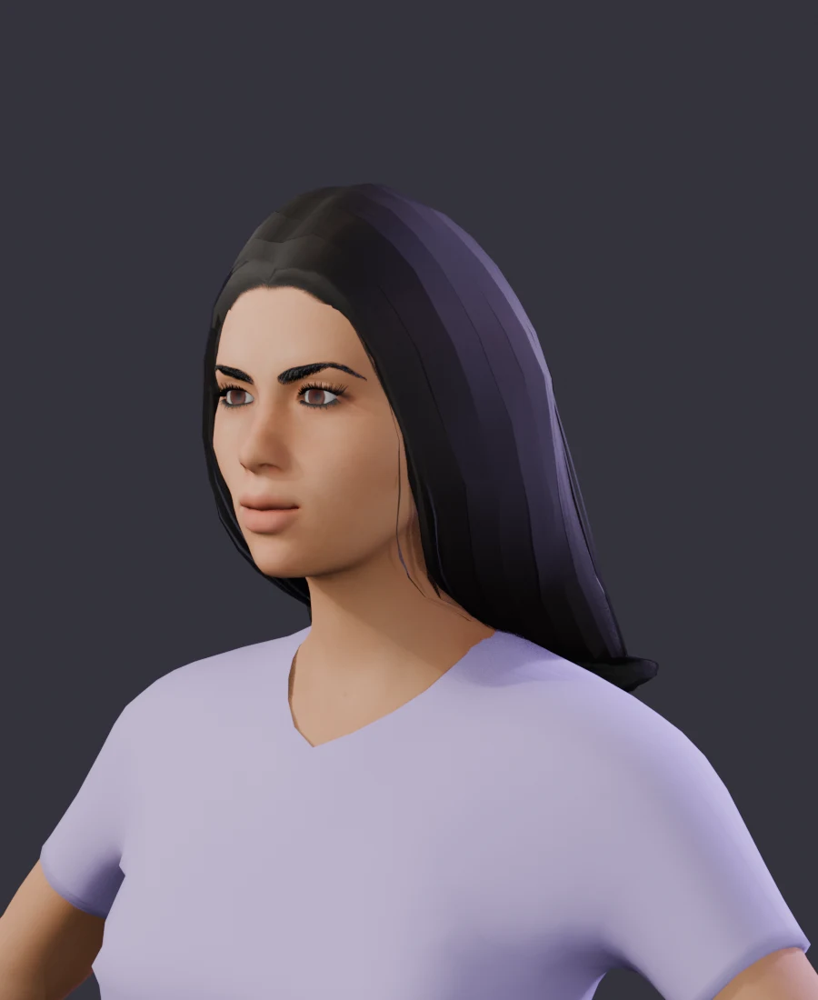

Rodada 3 · corte de cabelo e traços das fotos
Personagem 3D da Evelym
Ajustes pelas fotos de 2026-11-22, todos por parâmetro no script
(scripts/personagem/):
- cabelo gerado por script, no corte dela: chanel na altura dos ombros, repartido no meio, liso, com as mechas da frente descendo pelos cantos da testa e emoldurando o rosto;
- rosto mais fino e longo, queixo pequeno e pontudo, maçãs do rosto marcadas;
- nariz de dorso reto e fino, ponta pontuda e levemente arrebitada;
- olhos amendoados mais estreitos, com a pálpebra de cima um pouco caída;
- sobrancelhas quase retas, de espessura média; boca menos larga, lábio de cima cheio.
Ainda falta (próximas rodadas):
- uma pequena aba no cabelo atrás da orelha (visível no perfil);
- moletom lilás com capuz (a blusa lilás é provisória);
- sorriso e piscada, que dependem do pacote de expressões do MakeHuman.

